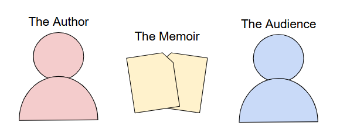
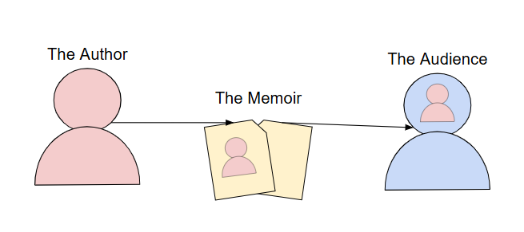

Hopefully if you’re reading this you have read a couple books and know the self-writing genres (mainly memoir and autobiographies).
To start with, we need to distinguish between the usage of these terms. Autobiographies are a subgenre of general :life writing, consisting of a self-written description of the author’s whole life, with stories possibly supported by evidence and possibly recounted from memory. Memoirs are closely related to autobiographies, focusing more on particular events and often less individually-centered.
Despite being less centered on themselves, the constructed ‘self’ told by the author is still necessary within memoirs. The written “narrative and identity” of the author “are so intimately linked that” each is constructed alongside the other in memoir.

In the simplest model of how memoirs construct the author, we can imagine a relation between the audience (us), the author, and the memoir. The author writes the memoir to reflect on impactful moments of their life, and we read these moments and form a mental model of the author through memoir.

Building from this, we need to understand why the author would choose to write a memoir. One main reason is “as a way to deal with the discontinuity of our lives”. The existential crisis generates from the assumption that one wants to form a coherent description of their identity, and that our lives (and henceforth ourselves) are always changing. In the sense of finding meaning in the world, the representation we have on others is a significant as our name, but is much harder to distinctly describe within words. In an example from Kingston’s “The Woman Warrior”, she grapples with her own morality as a product of her families treatment. In each chapter a
:new story
We have already changed by the next time we recognise moments in our lives that we can base ourselves on, creating a certain conflict of identity
:furthered by the author’s unreliability and limiting the scope of what coherence is left to narrate. If we choose to accept the fact that the narrator is partially unreliable through either natural or intentional altercations to their proposed self, then our goal shifts towards inspecting the self portrait’s detailing and technique to create our own understanding of the author.
Life Writing
As defined in this post, 'Life Writing' is the general form of documenting personal experiences, a combination of the lived experiences the author has through the lens of developing the self they perceive to be.
New Story
Each story is strikingly different in style, from Kingston’s retelling of the mythic story of Fa Mu Lan in “White Tigers” to the continuously altering story of Kingston’s aunt in “No Name Woman”. What similarities show is in the narration she chooses, placing each lead character under her own self (in some sense) through her filling in the discrete knowledge she begins with.
Unreliability
In form of language, any language has a limited set of words and the author would know even smaller of a set of words to communicate experiences through. One can try going around our clouded mix of memories through the shaping of literary elements, but pose a possibility of the audience misinterpreting metaphors. The scope of the coherent self is also limited further in memory, relying on the author to recall to the best of their ability the life-stories that best reflect their development. Actually there is a specific significance memory has, taken from “Writing the Self, Drawing the Self: Identity and Self-Reflexivity in Craig Thompson’s Graphic Memoir Blankets” and expressed in “The Mill, the Mirror and Identity: Representation of the Divided Self in Wojciech Has’s Film Adaptation of James Hogg’s Private Memoirs and Confessions of a Justified Sinner” is the perception of time. In a relation similar to the diagrams:
- Real time - the actual pacing of events the author experienced way back when;
- Internal time - the perceived pacing of the events experienced (imagine how waiting in a line feels like forever and how parties seemingly slow down near the end);
- Literary time / Pacing - the pacing told through the memoir, usually as the author’s way of lining up with the real time while also allowing the author to slow down during eventful scenes.
We can see this presentation in Kingston’s “The Woman Warrior”, describing the instant her mother Brave Orchid falsely recognized Moon Orchid: “Brave Orchid felt her heart jump—Moon Orchid. “There she is,” she shouted. But her niece saw it was not her mother at all. And it shocked her to discover the woman her aunt was pointing out. This was a young woman, younger than herself, no older than Moon Orchid the day the sisters parted.” While being almost instant, Kingston orders the specific details in line with what she expects how she would respond to catching up with her own age - a spark of recognition from a face decades ago only to remember how much everyone has grown in that time.